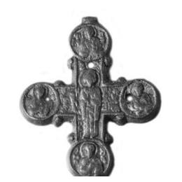

Catalog › CE-0211 · VSM2013-16
Valvă de encolpion din aramă, cat. 16, Muzeul Vladimir–Suzdal
prima treime a sec. XIII (1201–1233) · Suzdal, Rusia · Muzeul-rezervație de stat Vladimir–Suzdal (Владимиро-Суздальский музей-заповедник), Rusia, inv. В-6300/2773–79. АС-2716
single valve of a reliquary cross, aramă; prima treime a c. XIII (1201–1233); found at Suzdal, Rusia; kept at Muzeul-rezervație de stat Vladimir–Suzdal (Владимиро-Суздальский музей-заповедник), Rusia.


Identificare
- Categorie
- Valvă izolată
- Material
- Aramă
- Tehnică
- Turnare în relief
- Stare
- Fragmentară
- Dimensiuni
- Î 75 × L 57 × Gr 3 mm
Iconografie
- Avers
- Neidentificat
- Descriere avers
- În centru, Maica Domnului în picioare, cu palmele în fața pieptului; pe capetele tuturor celor patru brațe, în medalioane, busturi de sfinți; fundalul din jurul Maicii Domnului e umplut cu litere în relief, în oglindă: „Святая Богородице, помогай” (Sfântă Născătoare de Dumnezeu, ajută); imaginile sfinților au inscripții în relief greu de citit.
- Inscripții
- Святая Богородице, помогай (în oglindă)
- Limba
- Slavonă
Datare și atribuire
- Datare
- prima treime a sec. XIII (1201–1233)
- Centru
- Necunoscut
- Tipologie
- grupa „în relief”, după Kokorina
Descoperire
- Localitate
- Suzdal
- Țară
- Rusia
- Context
- Așezare
- Anul
- 1958
- Coordonate
- 56.4194° N, 40.4488° E
- Precizia locului
- Doar localitatea
Păstrare și referințe
- Colecție
- Muzeul-rezervație de stat Vladimir–Suzdal (Владимиро-Суздальский музей-заповедник), Rusia
- Nr. inventar
- В-6300/2773–79. АС-2716
- Bibliografie
- Н. А. Кокорина (сост.), Нагрудные кресты древнерусского времени из археологических коллекций Государственного Владимиро-Суздальского музея-заповедника, Vladimir, 2013, 76 p. [Kokorina 2013], p. 28, cat. nr. 16, cu fotografia reprodusă pe aceeași pagină. PDF liber pe site-ul muzeului: https://vladmuseum.ru/upload/iblock/787/69. Нагрудные кресты древнерусского времени из археологических коллекций ГВСМЗ.pdf (accesat 17.10.2026); text și pe azbyka.ru.
- Figura
- Kokorina 2013, ilustrația de la cat. 16
- Planșe
- Kokorina 2013, p. 28
- Observații
- Datare după Kokorina: prima treime a sec. XIII. Descoperire în 1958, săpături: Voronin N. N. Fragment: valva din spate și inelul lipsesc; pe brațul de sus și pe cele laterale sunt găuri rotunde, trecute prin placă. Coordonate: ale localității (aproximative), nu date în sursă.
Citare: Corpus Encolpiorum, CE-0211, Valvă de encolpion din aramă, cat. 16, Muzeul Vladimir–Suzdal, --root/piese/VSM2013-16/ (accesat 2026-10-20).